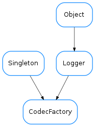

CodecFactory¶

-
class
CodecFactory[source]¶ Bases:
taurus.core.util.singleton.Singleton,taurus.core.util.log.LoggerThe singleton CodecFactory class.
To get the singleton object do:
from taurus.core.util.codecs import CodecFactory f = CodecFactory()
The
CodecFactoryclass allows you to get a codec object for a given format and also to register new codecs. TheCodecPipelineis a special codec that is able to code/decode a sequence of codecs. This way you can have codecs ‘inside’ codecs.Example:
>>> from taurus.core.util.codecs import CodecFactory >>> cf = CodecFactory() >>> json_codec = cf.getCodec('json') >>> bz2_json_codec = cf.getCodec('bz2_json') >>> data = range(100000) >>> f1, enc_d1 = json_codec.encode(('', data)) >>> f2, enc_d2 = bz2_json_codec.encode(('', data)) >>> print len(enc_d1), len(enc_d2) 688890 123511 >>> >>> f1, dec_d1 = json_codec.decode((f1, enc_d1)) >>> f2, dec_d2 = bz2_json_codec.decode((f2, enc_d2))
A Taurus related example:
>>> # this example shows how to automatically get the data from a DEV_ENCODED attribute >>> import taurus >>> from taurus.core.util.codecs import CodecFactory >>> cf = CodecFactory() >>> devenc_attr = taurus.Attribute('a/b/c/devenc_attr') >>> v = devenc_attr.read() >>> codec = CodecFactory().getCodec(v.format) >>> f, d = codec.decode((v.format, v.value))
-
CODEC_MAP= {'video_image': <class 'taurus.core.util.codecs.VideoImageCodec'>, '': <class 'taurus.core.util.codecs.NullCodec'>, 'none': <class 'taurus.core.util.codecs.NullCodec'>, 'bz2': <class 'taurus.core.util.codecs.BZ2Codec'>, 'zip': <class 'taurus.core.util.codecs.ZIPCodec'>, 'plot': <class 'taurus.core.util.codecs.PlotCodec'>, 'json': <class 'taurus.core.util.codecs.JSONCodec'>, 'videoimage': <class 'taurus.core.util.codecs.VideoImageCodec'>, 'bson': <class 'taurus.core.util.codecs.BSONCodec'>, 'null': <class 'taurus.core.util.codecs.NullCodec'>, 'pickle': <class 'taurus.core.util.codecs.PickleCodec'>}¶ Default minimum map of registered codecs
-
getCodec(format)[source]¶ Returns the codec object for the given format or None if no suitable codec is found
Parameters: format ( str) – the codec idReturn type: CodecorNoneReturns: the codec object for the given format
-